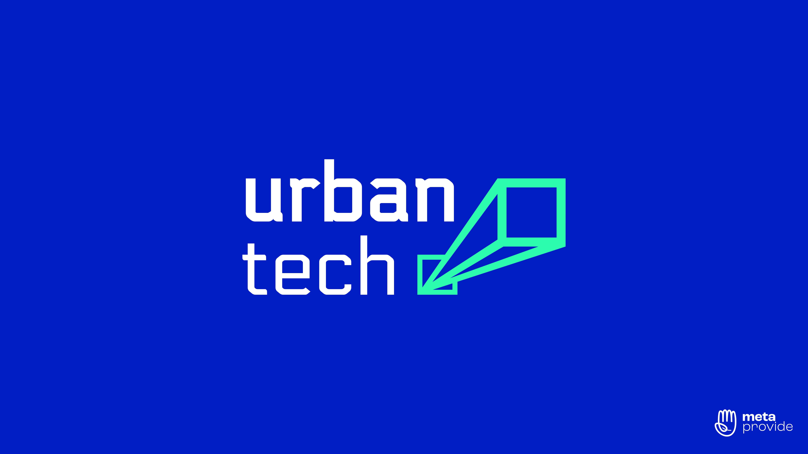
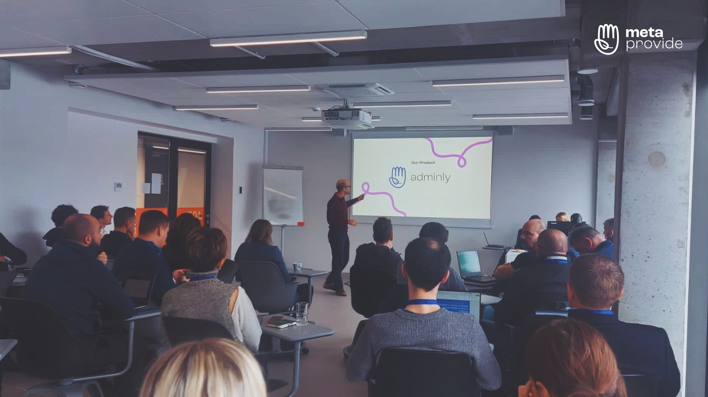

With so many accomplishments, MetaProvide still has a long - and good - way to go
Our team today consists of almost 20 people. We are based across Europe, representing different origins and nationalities. Therefore, each one of us brings a unique set of tools to support the process of creating MetaProvide and its respective projects.
We are here because we strongly believe in MetaProvide's mission and vision. And together, we are determined to achieve our objective: reduce individual suffering through human-centered IT services that foster inner growth in everyone.
Our journey is far from over and we continue to learn from the numerous experiences along the way.
We participated in the Urban Tech Hackathon in Lithuania!
Thanks to a lot of research, time, and effort invested into applying for various programs, we were finally accepted to take part in our first grant competition!
Urban Tech is a 3-year project funded by the European Union's Horizon 2020 research and innovation program under grant agreement No 101005301. This program aims to promote business acceleration related to HealthTech, SmartCity, and GreenTech.
Among the various startups registered, we were one of the 320 selected to participate in their Hackathon, which took place on November 18th - 19th in Lithuania.
Our Product Team and the MetaProvide Founder represented us at the event. In addition to pitching our solution and project, we took advantage of the opportunity to network, participate in workshops, learn from the best and improve our skills.

How did the Hackathon work?
After an intense application process, a selection was made. MetaProvide's Adminly was one of 320 projects chosen to compete in the HealthTech category, with the theme "2% of the world population can't get effective home treatment".
We were invited to make a pitch about how Adminly can make a difference in the lives of patients and physicians. Our project saves up to 30% of well-being providers' time through the help of VAs taking on administrative tasks. Providers are then able to fully focus on their practice and connect with more patients.
This event was about more than just pitching our project. We also had the opportunity to participate in lectures and workshops, which helped with formulating and delivering our pitch, as well as providing useful tips, ideas, direction and knowledge to apply throughout the organisation's trajectory.
Another advantage of participating in this event was the chance to be in front of so many large and potential projects. Lots of networking moments were promoted to meet competitors, form partnerships and introduce ourselves informally to potential partners and investors.
In this way, we had the pleasure to engage in interesting conversations with several talented participants, like the folks from Emplastrum, Guvenfuture, Skinuvita and MoxyID. Our conversations and exchanges felt full of potential and, we'd like to thank them for this opportunity as well. We hope to participate in more exchanges soon, either online or in person.

Who attended and what was the impact of our participation?
Considering our year-end priorities and the future in 2023, we decided to send 3 key people to properly represent MetaProvide: João Raposo, our Product Development Manager, Tiago Lamelas, our Product Research Manager and, finally, Björn Magalhães, our Founder and Chairman. Together, they spoke on behalf of our organisation, explaining our desire to make a difference in the world.
Despite having only 3 team members physically present, the rest of the group was sending good vibes and practical support to successfully deliver this task. The distance was no obstacle for our organisation to work together, from our Marketing to our Tech Team.
In addition to introducing Adminly to more people outside our circle, we had the opportunity to demonstrate a little about our organisation. We shared who we are, where we come from, and our mission to make a difference in people's lives, be it professionally or personally.
To get a clearer picture of our participation at the event, our representatives shared what this experience was like for each of them:
João, Product Development Manager - It was a great learning experience, we had the opportunity to improve our pitching skills and implement a new version of our financial model. After this event, we are able to understand better the perspective of an investor who is looking at a startup.
Tiago, Product Research Manager - The workshops during Hackathon helped us to validate some assumptions that we had and also question ourselves on some strategic moves. By reviewing previous work, we were challenged to see the same problems from other points of view. The high calibre of other teams motivates us to bring more value to the next competition.
Björn, Founder, and Chairman - I feel very proud of how we rode this unpredictable roller-coaster-adventure together with cheerfulness. For teams like ours which work primarily online, it felt profoundly meaningful to spend time together, working relentlessly with great effort and sharing our vision. To be supported by team members not on-site, but in spirit, working on various tasks was a good experience. It was fun to meet other developers who also are producing uplifting solutions to improve the state of the world.

What were our lessons from this experience?
Since our work is 100% remote, this fully face-to-face Hackathon was invaluable. This experience, along with all the lessons learnt along the way, will remain with us for life.
Of course, experiences like this include ups and downs, which our team definitely went through. It was our first time representing our organisation and main project in a Hackathon, so far from home, and totally out of our comfort zone. Learning to be prepared for adversities and being resilient is what makes us stronger.
We still managed to get the best out of this event. Beyond just being there for the unique experience, we were able to learn from other startups and workshops. We had the opportunity to improve our current pitch and learn, with the best, how to refine our work.
Perhaps the biggest takeaway was recognising there is a giant world of opportunities that we must explore, investigate, and connect with. Instead of just attending meetings and virtual meetings, we have to project our image and brand to people outside the online world. The offline world is here and we must be part of it!
So, first of all, we want to thank our team. Those who were physically present at the event, gave their all on behalf of our organisation, despite the many obstacles faced.
Also, a thank you to everyone who made our project happen and enabled us take part in this event. You're helping turn dreams into something concrete and tangible.
Finally, thank you for accompanying us on this journey. Your support makes us even stronger and committed to this unique and beautiful objective. Thank you for the inspiration to go even further.
Thanks!